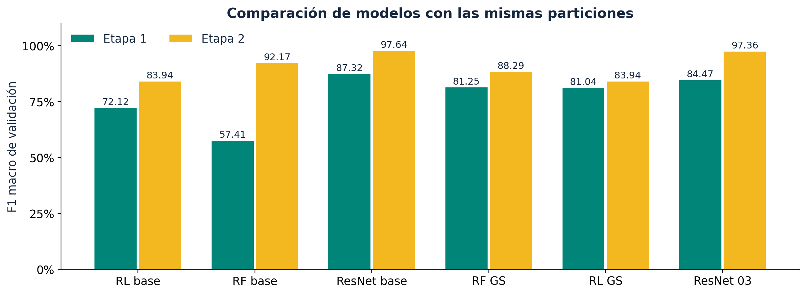
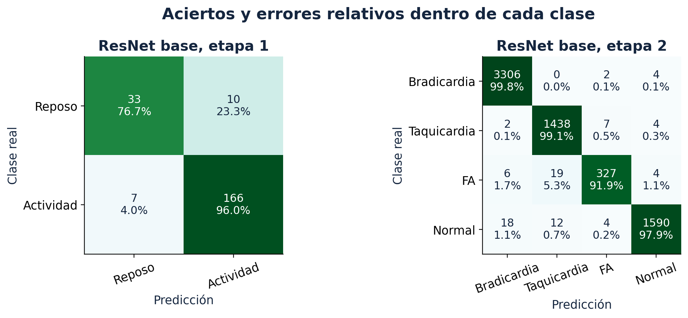

Etapa 1 · Reposo o actividad
ECG-interference
Señales de ECG tomadas con sensor portátil. Cada ventana contiene 4 000 muestras. La partición se hizo por sujeto.
1 075 ventanas
859 entrenamiento · 216 validación
- Reposo
- 214 19,9 %
- Actividad
- 861 80,1 %
Ingeniería Mecatrónica · FIUNA
Dos tareas sobre una misma señal: distinguir reposo de actividad y reconocer cuatro ritmos cardíacos.
Cómo funciona
El esquema propuesto usa la estimación de actividad para decidir cuándo analizar el ritmo. Cada etapa se evaluó con su propia fuente de datos.
Limpiamos las muestras, separamos los datos y normalizamos cada ventana para la ResNet.
El primer modelo recibe 4 000 muestras y predice reposo o actividad.
En el esquema de cascada, el resultado de reposo habilita la clasificación de cuatro ritmos.
Comparamos regresión logística y Random Forest, que usan características como la frecuencia cardíaca y los cruces por cero, con ResNet 1D, que aprende de la señal normalizada. Aplicamos Grid Search a los dos modelos clásicos.
Datos del experimento
Los totales corresponden a los datos preparados y reúnen entrenamiento y validación.
Etapa 1 · Reposo o actividad
Señales de ECG tomadas con sensor portátil. Cada ventana contiene 4 000 muestras. La partición se hizo por sujeto.
1 075 ventanas
859 entrenamiento · 216 validación
Etapa 2 · Cuatro ritmos
ECG clínicos de 12 derivaciones. Usamos la derivación I con 5 000 muestras a 500 Hz. La partición fue por clase y orden de ID.
33 712 registros
26 969 entrenamiento · 6 743 validación
Para tratar el desbalance, aplicamos pesos de clase en regresión logística y Random Forest. En la ResNet de la etapa 1 usamos Focal Loss ponderada. Para comparar modelos, el F1 macro da el mismo peso a cada clase.
Resultados de Colab
Explorá las seis variantes por etapa. La selección se hizo por F1 macro de validación.

| Modelo | F1 macro | Accuracy | Precisión | Recall | AUC ROC |
|---|

Equipo
Estudiantes del 9.º semestre de Ingeniería Mecatrónica en la Facultad de Ingeniería de la Universidad Nacional de Asunción.
Formación en inglés avanzado 2 en el CCPA. Experiencia en reparación de equipos electrónicos automotrices.
hyudiz@fiuna.edu.pyEncargado de la subdivisión de Mecánica del Club de Robótica. Miembro de la división de recuperación del CCTE. Responsable del sistema de despliegue de antena del CubeSat 2U SAPUCAI.
fguillen@fiuna.edu.py · GitHubHerramientas: Python, Google Colab, pandas, SciPy, scikit-learn, PyTorch, ONNX y Git.